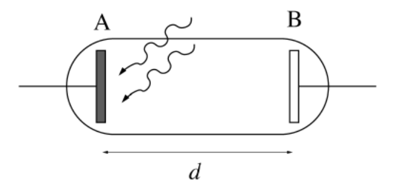
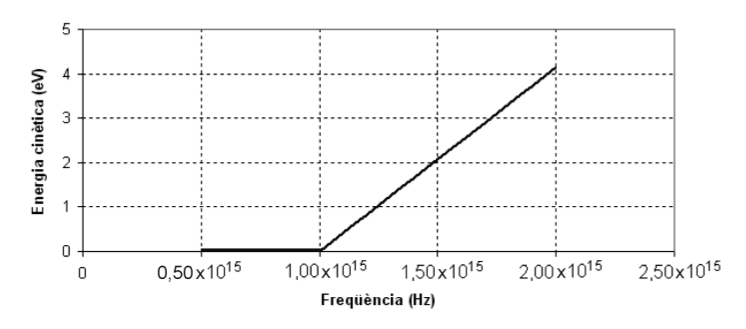
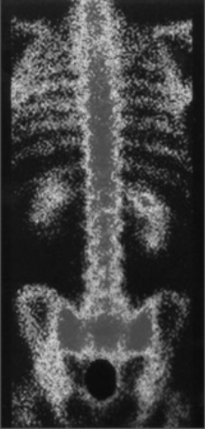
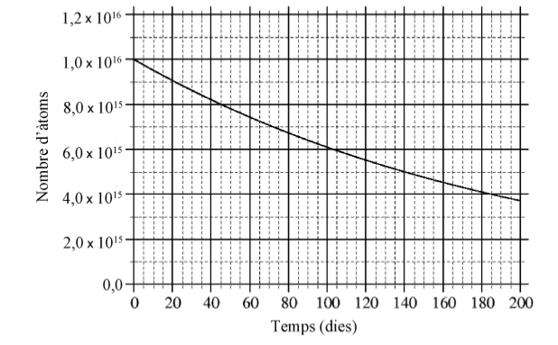
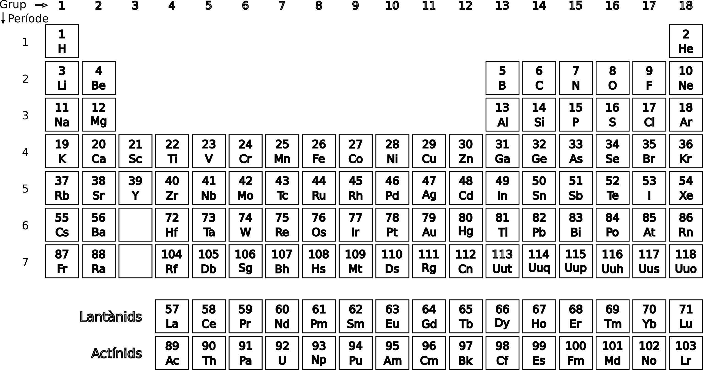

Problemes Unitat 3: La nova visió de l’univers
Efecte fotoelèctric
-
Si il·luminem una superfície d’un metall amb llum de $\lambda=512\,\mathrm{nm}$, l’energia cinètica màxima dels electrons emesos és de $8,65\times10^{-20}\,\mathrm{J}$. Quina serà l’energia cinètica màxima dels electrons emesos si incidim sobre aquest mateix metall amb llum de $\lambda=365\,\mathrm{nm}$?
-
L’energia mínima necessària per arrencar electrons del coure és de 4,4 eV. Quina serà la diferència de potencial que haurem d’aplicar per impedir la sortida d’electrons de coure si aquest s’il·lumina amb una llum de 150 nm de longitud d’ona?
-
Calcula l’energia cinètica màxima dels electrons emesos per una superfície metàl·lica quan hi incideixen fotons de longitud d’ona $\lambda=2\times10^{-7}\,\mathrm{m}$. L’energia mínima per alliberar els electrons (treball d’extracció) és $W=6,72\times10^{-19}\,\mathrm{J}$.
- Quan una superfície metàl·lica s’il·lumina amb llum de 180 nm (zona ultraviolada), aquesta emet electrons. Observem també que la freqüència llindar correspon a la llum de 230 nm.
- Calculeu la velocitat màxima amb què surten els electrons al principi de l’experiment.
- Amb quin potencial invers han de ser frenats aquests electrons per impedir que arribin a l’ànode de la cèl·lula fotoelèctrica?
-
Una llum de freqüència $6\times10^{14}\,\mathrm{Hz}$ incideix sobre una superfície metàl·lica i en surten electrons amb una energia cinètica de $2\times10^{-19}\,\mathrm{J}$. Calcula el treball d’extracció dels electrons i expressa’l en electronvolts. Resposta: $1,975\times10^{-19}\,\mathrm{J}$
- Se sap que un determinat metall experimenta l’efecte fotoelèctric quan s’hi fan incidir fotons d’energia superior a 1 eV. Suposeu que sobre aquest metall hi incideixen fotons de longitud d’ona $6\times10^{-7}\,\mathrm{m}$.
- Quant val la freqüència dels fotons incidents? 2.Es produeix l’efecte fotoelèctric? Per què?
- Una radiació de llum ultraviolada, d’una freqüència d’$1,5\times10^{15}\,\mathrm{Hz}$, incideix sobre una làmina de coure de manera que es produeix efecte fotoelèctric. La freqüència mínima perquè es produeixi efecte fotoelèctric en aquest metall és $1,1\times10^{15}\,\mathrm{Hz}$.
- Calculeu l’energia cinètica màxima dels fotoelectrons emesos.
- Expliqueu què passaria si la llum incident tingués una longitud d’ona de $3,0\times10^{-7}\,\mathrm{m}$.
- Se sap que un determinat metall experimenta l’efecte fotoelèctric quan s’hi fan incidir fotons d’energia superior a 1 eV. Suposeu que sobre aquest metall hi incideixen fotons de longitud d’ona $6\times10^{-7}\,\mathrm{m}$.
- Quant val la freqüència dels fotons incidents?
- Es produeix l’efecte fotoelèctric? Per què?
Dades:
$1\,\mathrm{eV=1,602\times10^{-19}\,J}$;
$c=3\times10^{8}\,\mathrm{m\cdot s^{-1}}$;
$h=6,62\times10^{-34}\,\mathrm{J\cdot s}$. - Una radiació ultraviolada de $\lambda=200\,\mathrm{nm}$ incideix sobre una placa de plom, de manera que salten electrons amb una energia cinètica màxima d’1,97 eV. Calculeu:
- La funció de treball (és a dir, l’energia mínima d’extracció d’electrons) del plom.
- La longitud d’ona associada als electrons emesos amb l’energia cinètica màxima.
Dades:
$c=3,00\times10\text{⁸}\,\mathrm{m/s}$;
$h=6,62\times10^{-34}\,\mathrm{J\cdot s}$;
$m_{e}=9,11\times10^{-31}\,\mathrm{kg}$;
$q_{e}=-1,60\times10^{-19}\,\mathrm{C}$;
$1\,\mathrm{eV=1,602\times10^{-19}\,J}$;
$1\,\mathrm{nm=10^{-9}\,\mathrm{m}}$. - Una antena de telefonia mòbil instal·lada al terrat d’un edifici emet ones electromagnètiques de 900 MHz de freqüència amb una potència de 4 W.
- Calculeu quants fotons emet l’antena en un minut.
- Valoreu si els fotons que emet l’antena poden produir efecte fotoelèctric en un metall que és a prop, tenint en compte que l’energia d’extracció mínima dels electrons del metall és 4,1 eV. En cas afirmatiu, calculeu l’energia cinètica dels electrons extrets. Si l’antena emet amb una potència de 8 W, com variarà l’efecte fotoelèctric que es pugui produir en el metall?
Dades: $h=6,62\times10^{-34}\,\mathrm{J\cdot s}$; $1\,\mathrm{eV=1,602\times10^{-19}\,J}$.
- Disposem d’un tub de buit com el de la figura. L’elèctrode A és fet de potassi, que té $W_{0}=2,29\,\mathrm{eV}$ com a valor de treball d’extracció.
- Determineu la velocitat amb què surten els electrons arrancats de l’elèctrode A quan l’il·luminem amb llum de color violat de 400 nm de longitud d’ona. 
- A continuació canviem l’elèctrode A per un altre que és fet d’un material desconegut. Per tal de determinar de quin material es tracta, l’il·luminem un altre cop amb la mateixa llum d’abans, i determinem que el potencial de frenada dels electrons de l’elèctrode A és $V_{f}=0,17\,\mathrm{V}$. Determineu el treball d’extracció del material i indiqueu de quin element és fet a partir de la taula de valors següent:
| Element | Ba | Li | Mg | As | Al | Bi | Cr | Ag | Be |
|---|---|---|---|---|---|---|---|---|---|
| $W_{0}$ | 2,70 | 2,93 | 3,66 | 3,75 | 4,08 | 4,34 | 4,50 | 4,73 | 4,98 |
Dades:
Massa de l’electró, $m_{\mathrm{electr\acute{o}}}=9,11\times10^{-31}\,\mathrm{kg}$,
Constant de Planck, $h=6,63\times10^{-34}\,\mathrm{Js}$,
Velocitat de la llum, $c=3,00\times10^{8}\,\mathrm{ms^{-1}}$,
$1\,\mathrm{eV=1,60\times10^{-19}\,\mathrm{J}}$
- En una experiència de laboratori, es mesura l’energia cinètica màxima dels electrons que salten quan es fan incidir radiacions de freqüència diferent sobre una placa d’un material. Els resultats obtinguts es mostren en la taula següent, en què $E_{c}$ representa l’energia cinètica, i $\nu$, la freqüència:
La representación gràfica dels resultats és la següent:  Determineu:$E_{c}\,\mathrm{(eV)}$ 0 0 2,07 4,14 $\nu\,\mathrm{(PHz)}$ 0,500 1,00 1,50 2,00 - El valor de la constant de Planck a partir de les dades d’aquest experiment.
- La funció de treball; és a dir, l’energia mínima d’extracció d’electrons.
Dades: $1\,\mathrm{eV=1,60\times10^{-19}\,\mathrm{J}}$; $1\,\mathrm{PHz=10^{15}\,\mathrm{Hz}}$.
Dualitat ona-corpuscle
- Una emissora de FM que es troba a 15 km de Barcelona transmet amb una potència d’1 kW a una freqüència de 98 MHz.
- Quants fotons emet durant un segon?
- Quina és la longitud d’ona dels fotons?
- Quant triga la senyal en arribar als oients?
-
Calculeu l’energia i la quantitat de moviment dels fotons de llum roja de longitud d’ona $\lambda=600\,\mathrm{nm}$.
Dades: $h=6,62\times10^{-34}\,\mathrm{J\cdot s}$; $c=3\times10^{8}\,\mathrm{m\cdot s^{-1}}$.
-
Calculeu el valor de la longitud d’ona d’un fotó d’energia 3 keV.
Dades: $h=6,62\times10^{-34}\,\mathrm{J\cdot s}$; $c=3\times10^{8}\,\mathrm{m\cdot s^{-1}}$; $1\,\mathrm{eV=1,602\times10^{-19}\,J}$.
-
Se sap que la sensibilitat més gran de l’ull humà correspon a la llum de longitud d’ona $\lambda=5,5\times10^{-7}\,\mathrm{m}$. Determineu l’energia i la quantitat de moviment dels fotons d’aquesta longitud d’ona.
Dades: $c=3\times10^{8}\,\mathrm{m/s}$; $h=6,62\times10^{-34}\,\mathrm{J\cdot s}$.
- Entre dos punts A i B s’estableix una diferència de potencial $V_{A}-V_{B}=120\,\mathrm{V}$. Un electró està situat al punt B, inicialment en repòs. Determineu:
- La velocitat amb què arriba al punt A.
- La longitud d’ona de de Broglie de l’electró, corresponent a la velocitat anterior. Dades: $h=6,62\times10^{-34}\,\mathrm{J\cdot s}$, $q_{e}=-1,60\times10^{-19}\,\mathrm{C}$, $m_{e}=9,11\times10^{-31}\,\mathrm{kg}$
-
Calculeu l’energia i la longitud d’ona d’un fotó de 1.015 Hz de freqüència.
Dades: $c=3\times10^{8}\,\mathrm{m/s}$; $h=6,625\times10^{-34}\,\mathrm{J\cdot s}$.
Principi d’indeterminació
-
Calcula la indeterminació en la quantitat de moviment i en la velocitat de l’electró de l’àtom d’hidrogen a la primera òrbita de Bohr. El radi és 0,529 Å i volem que la indeterminació en la posició sigui l’1% d’aquest radi. Expressa la indeterminació en la velocitat en funció de la velocitat de la llum.
-
Un electró es troba dintre d’una capsa de $2\,\mathrm{nm}$ d’arista. Determineu l’incertesa en:
- la seva velocitat,
- la seva longitud d’ona.
Radioactivitat
- Un isòtop radioactiu artificial té un temps de semidesintegració de 10 dies. Si es té una mostra de 25 mg d’aquest isòtop,
- Quina quantitat es tenia ara fa un mes?
- Quina quantitat es tindrà d’aquí a un mes?
-
Sabem que el període de semidesintegració del $\mathrm{^{14}C}$ és de 5.730 anys i un gram de carboni actual té una activitat de 920 desintegracions per hora. Una mostra de fusta conté 10 g de carboni i té una velocitat de desintegració del carboni 14 de 100 comptes/min. Quina és l’edat de la mostra?
-
Una excavació arqueològica en terres egípcies ha revelat un gran nombre de troballes d’una època desconeguda. Si la concentració de carboni-14 $(T_{1/2}=5370\,\mathrm{anys})$ en la fusta d’un taüt trobat és d’un 61% respecte de la concentració actual de la mateixa fusta actualment, de quin any podem pensar que és el taüt?
-
L’activitat d’1 Ci correspon a $3,7\times10^{10}$ becquerels o desintegracions per segon. Un gram de l’isòtop de radi $\mathrm{_{88}^{226}Ra}$ té una activitat d’1 Ci. Determineu el període de semidesintegració del radi en anys.
-
Un cert isòtop té una vida mitjana de 7 h. Quants segons són necessaris perquè la mostra es desintegri un 10%?
-
Quin és el període de semidesintegració d’un nucli radiactiu l’activitat del qual disminueix en 1/8 al cap d’un dia?
- La central nuclear de Fukushima al Japó va patir l’any 2011 l’accident nuclear més greu de la història degut a un terratrèmol i un posterior tsunami devastadors. Quatre dels seus sis reactors es van fondre. Actualment la zona que rodeja la central té restringit l’accés degut als perillosos nivells de radioactivitat. Un dels isòtops radioactius que es troben a la zona és el Cesi-137 $(\mathrm{^{137}Cs})$, que decau en Bari-137 $(\mathrm{^{137}Ba})$, que és estable, amb un període de semidesintegració 30,17 anys.
- Quin tipus de decaïment té el Cesi-137? Escriu la equació desenvolupada del decaiment.
- Si en una mostra de terreny s’ha tobat una activitat de 5000 Bq i es considera que el nivel d’activitat segur per als humans ha d’estar per sota els 200 Bq. Quants anys han de passar fins que s’arribi als nivells de seguretat?
- El iode pot ser un radiofàrmac. L’isòtop $\mathrm{_{53}^{131}I}$ és una font de raigs gamma. S’injecta al pacient per poder obtenir imatges gammagràfiques. Aquest radioisòtop té un període de semidesintegració de 13,2 h.
- Quina fracció de $\mathrm{_{53}^{131}I}$ resta al cos 24,0 hores després d’injectar el fàrmac?
- En un altre procés, el $\mathrm{_{53}^{131}I}$ també pot produir $\mathrm{_{54}^{131}Xe}$. Escriviu l’esquema del procés nuclear. Quina partícula s’emet?

- La radioactivitat és un mitjà fiable per a calcular l’edat de les roques i minerals que contenen isòtops radioactius concrets. Aquest sistema de datació radiomètrica ens permet mesurar el temps geològic. Un d’aquests mètodes es basa en la desintegració de l’isòtop $\mathrm{_{19}^{40}K}$ (potassi) en $\mathrm{_{18}^{40}Ar}$ (argó). El rellotge potassi-argó comença a funcionar quan els minerals que contenen potassi cristal·litzen a partir d’un magma o dins una roca. En aquest moment, els nous minerals contenen $\mathrm{_{19}^{40}K}$ i no contenen $\mathrm{_{18}^{40}Ar}$. A mesura que passa el temps, el $\mathrm{_{19}^{40}K}$ es desintegra i tots els àtoms de $\mathrm{_{18}^{40}Ar}$ que trobem en el mineral en un temps posterior a la formació provenen de la descomposició del $\mathrm{_{19}^{40}K}$.
- Escriviu la reacció nuclear de l’emissió de partícules $\beta$ de l’isòtop $\mathrm{_{19}^{40}K}$.
- En una roca s’han trobat 10,0 g de $\mathrm{_{19}^{40}K}$ i 10,0 g de $\mathrm{_{18}^{40}Ar}$. Quina quantitat de $\mathrm{_{19}^{40}K}$ hi haurà quan hauran transcorregut $5,00\times10^{9}\,\mathrm{anys}$? Fent servir la datació radiomètrica basada en el potassi-argó, digueu quina edat té la roca. Considereu que el $\mathrm{_{19}^{40}K}$ es desintegra només en $\mathrm{_{18}^{40}Ar}$.
Dada: Període de semidesintegració del $\mathrm{_{19}^{40}K}$, $t_{1/2}=1,25\times10^{9}\,\mathrm{anys}$.
- Una gammagrafia òssia és una prova diagnòstica que consisteix a injectar per via intravenosa una substància que conté un cert isòtop radioactiu que es diposita en els ossos i que emet raigs gamma. La radiació emesa es detecta amb una gamma-càmera que escaneja el cos i pren imatges de la quantitat de l’isòtop acumulada en els ossos. En aquest tipus de gammagrafies s’utilitza el tecneci 99 com a radioisòtop.
- Quant s’haurà reduït el nombre de nuclis de l’isòtop injectat al cap d’un dia?
- El $\mathrm{_{43}^{99}Tc}$ prové de la desintegració beta d’un altre element. Indiqueu el nombre de protons i neutrons del nucli del qual prové.
Dades: $t_{1/2}(\mathrm{^{99}Tc})=6,00\,\mathrm{h}$.
- Hem observat una mostra d’un isòtop radioactiu. El gràfic mostra l’evolució del nombre d’àtoms de l’isòtop durant 200 dies.

- Determineu el període de semidesintegració de l’isòtop. Quants àtoms quedaran al cap de tres períodes de semidesintegració?
- Sospitem que es tracta de poloni 210 (Z = 84), un element emissor de radiació alfa. Escriviu la reacció nuclear de l’emissió alfa d’aquest isòtop.
Dades: Nombres atòmics i símbols d’alguns elements:
80 81 82 83 84 85 86 Hg Tl Pb Bi Po At Rn -
El poloni 210 té un període de semidesintegració de 138,4 dies i es desintegra, per emissió de partícules alfa, en un isòtop estable del plom. El procés és el següent:
- Determineu els índexs x i y i el temps necessari perquè la massa del poloni es redueixi al 30 % de la massa inicial.
- Calculeu l’energia que es desprèn en la desintegració d’un nucli de poloni, expressada en J i en MeV.
Dades:
$m(\mathrm{_{84}^{210}Po})=209,983\,\mathrm{u}$;
$m(\mathrm{_{y}^{x}Pb})=205,974\,\mathrm{u}$;
$m(\mathrm{_{2}^{4}He})=4,003\,\mathrm{u}$;
$1\,\mathrm{u=1,66\times10^{-27}\,\mathrm{kg}}$;
$1\,\mathrm{eV=1,6\times10^{-19}\,J}$;
$c\mathrm{=3\times10^{8}\,m/s}$. - El triti és un isòtop radioactiu de l’hidrogen. El nucli del triti té dos neutrons.
- El triti es genera de manera natural a l’atmosfera quan els àtoms de nitrogen xoquen amb una certa partícula que anomenarem «?». La reacció és:
També es pot produir en reactors nuclears, amb la reacció següent:
Determineu els valors dels índexs x, y, z, j i k.
- El període de semidesintegració del triti és, aproximadament, de dotze anys. Elaboreu una gràfica amb les variables de massa i temps en què s’observi com varia la quantitat de triti d’una mostra que inicialment és de 120 g durant els seixanta anys següents.
-
El iode 131 és un isòtop radioactiu que emet $\beta^{-}$ i $\gamma$, té un període de semidesintegració de vuit dies i es fa servir per a tractar el càncer i altres malalties de la glàndula tiroide. La reacció de descomposició és la següent:
-
Determineu el valor dels nombres màssic i atòmic del xenó (x i y en la reacció, respectivament). Si les partícules $\beta^{-}$ s’emeten a una velocitat de $2\times10^{5}\,\mathrm{km/s}$, calculeu-ne la longitud d’ona associada.
-
Un pacient rep un tractament amb iode 131. Quants dies han de transcórrer perquè la quantitat de iode 131 al cos del pacient es redueixi fins al 12,5 % del valor inicial?
Dades: $m_{\beta}=9,11\times10^{-31}\,\mathrm{kg}$; $h=6,62\times10^{-34}\,\mathrm{Js}$.
-
- L’any 2011 ha estat declarat Any Internacional de la Química, per commemorar, entre altres fets, que fa cent anys Marie Curie va ser guardonada amb el Premi Nobel de Química pel descobriment del radi, entre altres mèrits. El període de semidesintegració del radi és $1,59\times10^{3}\,\mathrm{anys}$. Si el 1911 es va guardar una mostra d’1,00 g de radi, calculeu:
- La quantitat de radi de la mostra que queda actualment.
- L’activitat radioactiva inicial de la mostra d’1,00 g de radi, i l’activitat radioactiva del radi que queda de la mostra avui.
Dades: $N_{A}=6,02\times10^{23}\,\mathrm{mol^{-1}}$; $m_{a}(\mathrm{Ra})=226\,\mathrm{u}$.
- La tècnica de diagnòstic a partir de la imatge que s’obté mitjançant tomografia per emissió de positrons (PET, Positron Emission Tomography) es fonamenta en l’anihilació entre la matèria i l’antimatèria. Els positrons, emesos pels nuclis de fluor, $^{18}\mathrm{F}$, injectats al pacient com a radiofàrmac, s’anihilen en entrar en contacte amb els electrons dels teixits del cos i de cadascuna d’aquestes anihilacions es creen fotons, a partir dels quals s’obté la imatge. La desintegració d’un nucli de fluor, $^{18}\mathrm{F}$, es pot escriure mitjançant la reacció nuclear següent:
- Digueu quants neutrons i quants protons té aquest isòtop artificial de fluor, $^{18}\mathrm{F}$. Completeu la reacció nuclear, és a dir, determineu $x$, $y$ i $z$.
- El període de semidesintegració del $^{18}\mathrm{F}$ és 109,77 s. Calculeu el temps que ha de passar perquè quedi una vuitena part de la quantitat inicial de $^{18}\mathrm{F}$. Quin percentatge de partícules quedaran al cap d’una hora? Tenint en compte aquest resultat, digueu si podríem emmagatzemar gaire temps aquest radiofàrmac i justifiqueu-ho.
Reaccions nuclears
-
Si bombardegem amb neutrons el fluor 19 es forma un nou element amb emissió d’una partícula alfa, seguint l’equació:
- Quin és aquest nou element?
- Quina és la seva massa atòmica?
-
L’americi (Am) és l’element de nombre atòmic 95. Els primers àtoms d’americi 241 van ser produïts el 1944 per Glenn Theodore Seaborg i els seus col·laboradors fent servir un seguit de reaccions nuclears a partir del plutoni (Pu). A con- tinuació, es mostren, incompletes, les dues últimes etapes del procés:
- Determineu els valors dels coeficients a, b, c i d. Quin nom té la partícula que el Pu-240 ha capturat en la primera reacció? Com s’anomena la desintegració descrita en la Glenn Theodore Seaborg segona reacció?
- Calculeu el percentatge de nuclis de Am-241 que s’han desintegrat des del 1944 fins ara.
Dada: Període de semidesintegració de l’americi 241, $t_{1/2}=432\,\mathrm{anys}$.
- L’urani 235 té uns quaranta modes possibles de desintegració per absorció d’un neutró.
- Completeu la reacció nuclear següent, que s’esdevé quan un nucli d’urani 235 absorbeix un neutró:
Indiqueu també quants neutrons i protons té aquest nucli d’urani.
- Calculeu l’energia produïda en la fissió d’un nucli d’urani 235, d’acord amb la reacció anterior.
Dades:
$m_{\mathrm{neutr\acute{o}}}=1,00866\,\mathrm{\mathrm{u}}$;
$m\mathrm{(^{235}U)}=235,124\,\mathrm{u}$;
$m(\mathrm{^{95}Sr})=94,9194\,\mathrm{u}$;
$m(\mathrm{^{139}Xe})=138,919\,\mathrm{u}$;
$c=2,99792\times10^{8}\,\mathrm{ms^{-1}}$;
$1\,\mathrm{u=1,66054\times10^{-27}\,\mathrm{kg}}$. -
Completa les reaccions nuclears següents:
- $^{9}\mathrm{Be+{}^{4}He}\longrightarrow\mathrm{^{12}C+\ldots+\gamma}$
- $^{128}\mathrm{I}\longrightarrow\mathrm{^{128}Xe+\ldots+\gamma}$
- $^{129}\mathrm{Ba}\longrightarrow\mathrm{^{129}Cs+\ldots+\gamma}$
- $^{35}\mathrm{Cl+{}^{1}n}\longrightarrow\mathrm{^{36}S+\ldots+\gamma}$
- $^{208}\mathrm{Po}\longrightarrow\mathrm{^{204}Pb+\ldots+\gamma}$
- $\ldots+{}^{222}\mathrm{Rn}\longrightarrow\mathrm{^{226}Ra+\gamma}$
- Completa les reaccions de fissió nuclear següents:
- $\mathrm{^{235}U+_{0}^{1}n\longrightarrow^{101}Mo+^{132}Sn+\ldots}$
- $\mathrm{^{239}Pu+_{0}^{1}n\longrightarrow^{100}Tc+\ldots+4_{0}^{1}n}$
- $\mathrm{^{235}U+_{0}^{1}n\longrightarrow^{94}Sr+\ldots+2{}_{0}^{1}n}$
- $\mathrm{^{239}Pu+_{0}^{1}n\longrightarrow\ldots+^{133}In+3_{0}^{1}n}$
Dades útils
- Constant elèctrica: $ k = 9\times10^{9}\,\mathrm{Nm^{2}/C^{2}}$
- Massa de l’electró: $ m_{e} = 9,109\times10^{-31}\,\mathrm{kg}$
- Constant de Plank: $h = 6,63\times10^{-34}\,\mathrm{J\text{·}s}$
- Constant de gravitació: $G = 6,76\times10^{-11}\,\mathrm{Nm^{2}C^{-2}}$
- Número d’Avogadro: $N_{Av} = 6,02\times10^{23}\,\mathrm{nuclis/mol}$
- Càrrega de l’electró: $e =-1,6\times10^{-19}\,\mathrm{C}$
- Velocitat de la llum al buit: $c = 3\times10^{8}\,\mathrm{m\cdot s^{-1}}$
